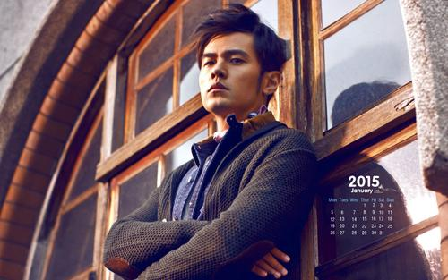
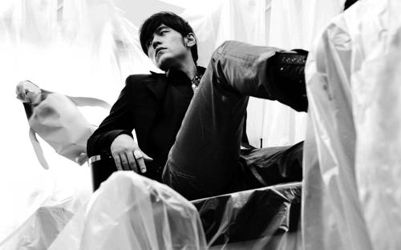

周杰伦
周杰伦（Jay
Chou），1979年1月18日出生于台湾省新北市，祖籍福建省泉州市永春县，中国台湾流行乐男歌手、原创音乐人、演员、导演等，毕业于淡江中学。
重要事件
- 2000年发行首张个人专辑《Jay》。
- 2001年发行的专辑《范特西》奠定其融合中西方音乐的风格
-
2002年举行“TheOne”世界巡回演唱会 2003年成为美国《时代周刊》封面人物
- 2004年获得世界音乐大奖中国区最畅销艺人奖
-
2005年凭借动作片《头文字D》获得台湾电影金马奖、香港电影金像奖最佳新人奖
- 2006年起连续三年获得世界音乐大奖中国区最畅销艺人奖
-
2007年自编自导的文艺片《不能说的秘密》获得台湾电影金马奖年度台湾杰出电影
- 2008年凭借歌曲《青花瓷》获得第19届金曲奖最佳作曲人奖。
-
2009年入选美国CNN评出的“25位亚洲最具影响力的人物”同年获得第20届金曲奖最佳国语男歌手奖
- 2010年入选美国《Fast Company》评出的“全球百大创意人物”
-
2011年再度获得金曲奖最佳国语男歌手奖，并且第4次获得金曲奖最佳国语专辑奖；同年主演好莱坞电影《青蜂侠》
- 2012年登福布斯中国名人榜榜首
成就和荣誉
- 2018-08-29 华人歌曲音乐盛典年度最受欢迎男歌手 （获奖）
-
2017 Billboard Radio China 2016年度华语十大金曲奖 告白气球 （获奖）
-
2017 华语金曲奖致敬香港回归20周年颁奖盛典年度最佳国语专辑
周杰伦的床边故事（获奖）
- 2017 第12届KKBOX数字音乐风云榜年度十大风云歌手 （获奖）
- 2017 hito流行音乐奖最受欢迎男歌手 （获奖）
- 2017 hito流行音乐奖年度十大华语歌曲 （获奖）
- 2017 第1届 CMA唱工委音乐奖年度专辑 周杰伦的床边故事（获奖）
-
2017 第1届 CMA唱工委音乐奖最佳流行音乐专辑 周杰伦的床边故事（获奖）
- 2017 第1届 CMA唱工委音乐奖最佳作曲 （获奖）
主要作品
| 序号 |
名字 |
| 01. |
屋顶 |
| 02. |
东风破 |
| 03. |
简单爱 |
| 04. |
借口 |
| 05. |
安静 |
| 06. |
安静 |
| 07. |
可爱女人 |
| 08. |
黄金甲 |
| 09. |
龙卷风 |
| 10. |
米兰的小铁匠 |
| 11. |
开不了口 |
| 12. |
黑色幽默 |
生活照

- 
- 
人物评价
周杰伦是流行音乐市场具有革命性和指标性的原创歌手，同时也是影响华语乐坛很深的音乐人。
他把中国本土文化和R&B音乐相结合，将R&B这种音乐形态完全中国化，在很大程度上提升了词曲原创人在华人音乐界的地位 。他突破亚洲音乐原有的主题和形式，创造出了多变的歌曲风格。他不仅擅长节奏蓝调、饶舌、西方古典钢琴等等
，每张专辑都有中国风歌曲也是他的特点之一 。
他将Hip-Hop、R&B唱法融入到中国传统音乐当中 ，让中国风变成华语流行音乐的主流曲风 。周杰伦的独特之处还在于他在追求中国风音乐的同时，将文学美与意境美注入到音乐中，使其作为偶像的同时又不失文化品味 。